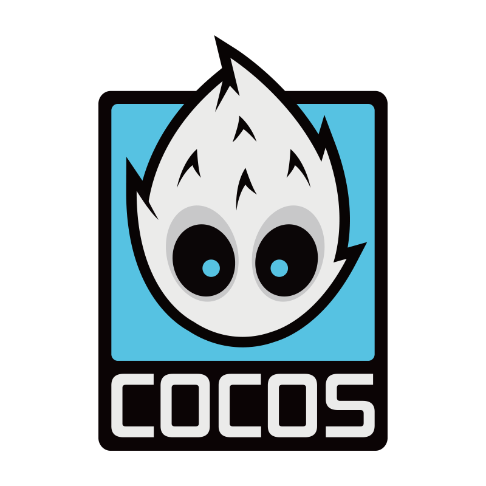
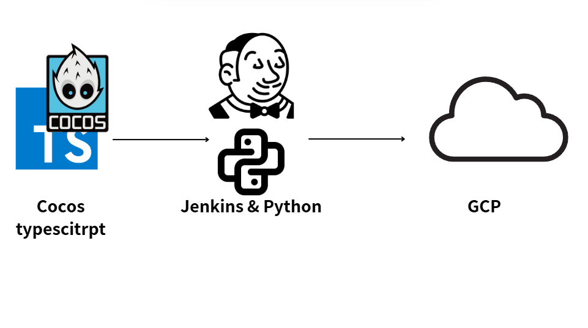

許子桓 Richard Hsu
H5 遊戲開發處／開發一部部長｜技術主管
勇於挑戰，無畏艱辛！
- 地區台北市／新北市
- GitHub github.com/Tzuhuanhsu
Summary
核心優勢
- 9 年遊戲前端實務經驗（2016 起）｜Cocos2d-x 至 Cocos Creator，跨 Android／iOS／H5
- 現任開發一部部長｜帶領 6 人團隊
- AI Coding Agent 導入｜6 人團隊全數納入日常開發流程
- SLOT 公版架構｜單款串接 3 天 → 1 天以內
- Jenkins + Python 自動化｜版本產出時間減少 70% 以上
- 效能優化｜首屏載入 10 秒 → 7 秒
- 線上風險控管｜白名單先行測試、熱更新／回滾機制
- 多品類 H5｜SLOT、押分機、麻將、魚機；具 Google Play／App Store 上架經驗
AI Engineering
AI 導入成果
- Agent 導入：落地 AI Coding Agent（GitHub Copilot Agent）並產出教學文件，6 人團隊全數納入日常開發
- AI 開發規範：將 TypeScript 標準與審查清單寫成 Agent 指令集，產出自動套用團隊規範
- 自訂 Agent：架構審查、Code Review、重構、Git Commit，降低人工 Review 時數
- 缺陷提早暴露：AI 先行審查，減少後段返工
- Cocos Creator × MCP：Agent 直接操作節點／元件／Prefab／場景
- 跨系統自動化：GitLab Issue × Google Sheet 資料同步
Tools
開發工具
- Claude Code

Cocos Creator- Jenkins 自動化
 Xcode
Xcode- Android Studio
AI 開發：Claude（Agent、Skill、MCP 設定）／GitHub Copilot Agent
版控與協作：Git／GitLab／Jenkins CI-CD／VS Code
Program Skills
程式技能
-
主力
Claude Code / AI Agent 開發
自訂 Agent 與 Skill／MCP 整合／團隊 AI 開發規範制定
-
主力
TypeScript / JavaScript
Cocos Creator 主要開發語言／架構設計與規範制定
-
主力
Python
Jenkins 自動化工具鏈／版本比對打包／跨系統整合
-
熟練
C++
Cocos2d-x 引擎與平台功能封裝／MVC、State Machine、Observer
-
熟練
Lua
遊戲應用層開發／免編譯即時更新
-
熟練
Objective-C / Java
iOS／Android 原生層開發／第三方 SDK 串接
-
具備經驗
Golang / Swift & SwiftUI / SQL
自學完成訂房系統 Go Server 與 Client
Leadership
技術主管經驗
團隊管理
- 團隊規模：6 人 H5 遊戲開發團隊
- 排程與人力調度：工時評估、交付承諾、跨專案分配
- 面試與招募：職缺定義、技術面試、人選評估
- 績效評核：績效評估與一對一回饋
- 新人 Onboarding：上手流程與教學文件
- 技術輔導：成員問題排除、開發知識文件化
技術治理
- 開發框架與標準：TypeScript 規範、Code Review 清單、架構原則
- SLOT 公版產線：由複製改為公版沿用，單款串接 3 天 → 1 天以內，公版變更只需改一處；並優化資源包與快取策略
- 引擎升級：主導 Cocos Creator 2.x → 3.x 升級與風險評估
品質與線上風險管理
- 白名單先行測試：新版本受控範圍驗證後再全量發布
- Hotfix 決策：判斷修復方式與上線時機，經熱更新快速修正
- 版本回滾：回滾與強制更新機制
- 事後檢討：根因回饋至開發流程與自動化檢查
跨部門協作與技術推廣
- 平行協作對象：企劃／Server 端團隊／美術動畫／品檢 QA／營運
- 跨部門自動化：協助品檢團隊整合 GitLab Issue × Google Sheet
- 新技術導入：AI Coding Agent、Jenkins CI/CD、公版架構
- 對內技術分享：Jenkins 自動化建置、產品轉化率分析
- 競品分析：拆解海外 SLOT 的遊戲體驗與演出節奏，整理成文件分享
Portfolio
作品
SLOT 競品分析報告
海外 SLOT 產品的遊戲體驗分析文件
AI Coding Agent 導入經驗
團隊導入 AI Coding Agent 的規範、Agent 設定與實作經驗整理
Cocos Creator 自動化建置流程

Jenkins 自動化建置報告
使用 Jenkins 完成遊戲自動化建置的內部分享
產品轉化率分析報告
透過 Log 追蹤使用者行為，分析並調校產品轉化率
宙斯之力 / 魔法師梅林
Cocos Creator SLOT 遊戲，擔任前端主要負責人
麻辣娛樂城
- 前端遊戲開發、遊戲引擎開發
- Android、iOS、H5 三版本產出
- 自動化遊戲版本產出機制
- 串接 iOS 原生支付 SDK
Cocos Creator 捕魚機路徑編輯器
自製 Cocos Creator 編輯器擴充工具，用於編輯魚群移動路徑
訂房系統 Go Server
自學 Golang 完成的訂房系統後端
Experience
經歷
網銀國際（台北分公司）｜2024.04 – 現在
- 2026
- H5 遊戲開發處／開發一部部長
- 帶領團隊導入 AI Coding Agent，建立團隊的 AI 開發規範
- 協助品檢團隊建立 GitLab Issue 與 Google Sheet 整合自動化流程
- 1月 帶領團隊完成麻將 H5「啪麻雀」
- 1月 帶領團隊製作 H5 魚機「神話魚機」
- 2025
- 12月 升任 H5 遊戲開發處／開發一部部長
- 接手 6 人團隊，負責排程、技術決策與成員技術輔導
- 帶領團隊進行麻將 H5 製作與「麻將之星」改版
- 以 Python + Jenkinsfile 整合 CI/CD 自動化指令流程
- 6月 完成押分機 H5「賓果行星」
- 2024
- 4月 加入網銀國際，擔任 Cocos Creator SLOT 前端主要負責人
- 從無到有建置 Cocos Creator SLOT 開發流程並持續優化效能
- 制定開發標準與流程，協助團隊成員解決技術問題
- 整合 Jenkins CI/CD 內部開發流程
- 與 Server 端整合封包串接
- 主責完成多款 H5 SLOT（含宙斯之力、魔法師梅林）
職涯轉換期｜2023.03 – 2024.03
- 2023
- 3月 因家庭因素暫離職場，期間持續技術投入
- 自學 Golang，完成訂房系統 Server 與 Client
- 自學 Swift 與 SwiftUI
鈊象電子｜2016 – 2023.03
- 2022
- 麻辣娛樂城平台 Client（Cocos Creator）
- 主導 Cocos Creator 2.0 升級至 3.0
- 建置 Android、iOS 專案與平台編譯自動化流程
- 建置平台熱更新與強制更新流程
- 串接第三方 SDK：iOS 儲值、Firebase、AppsFlyer、Line Login、Facebook Login、Sign in with Apple
- 負責上架 Google Play 與 App Store
- 2020 – 2021
- FHM 遊戲平台 Client 持續開發與維護（Cocos2d-x）
- 平台功能迭代開發與線上問題排除
- 遊戲移植與版本產出維運（Android / iOS）
- 持續維護並擴充 Jenkins + Python 自動化流程
- 2019
- FHM 遊戲平台 Client（Cocos2d-x）
- 結合 Jenkins 與 Python 改造 APP 更新機制，優化製程並提高更新速度
- 遊戲 APP 轉化流程優化
- 遊戲移植與平台功能開發、維護
- 將 Android 專案自 Eclipse 遷移至 Android Studio，並完成第三方套件整合
- 2018
- iRich 遊戲平台 Client（Cocos2d-x）
- 更新機制優化
- 2017
- iRich 遊戲平台 Client（Cocos2d-x）
- 擔任前端遊戲工程師
- 遊戲移植與平台功能開發、維護
- 2016
- 進入鈊象電子擔任前端工程師
- 線上平台共用工具（SDK）開發
Education
學歷
- 明新科技大學｜電子工程系
- 主修計算機領域，畢業專題負責程式開發